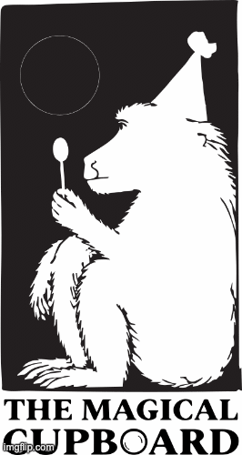

Share More. Create More. Waste Less.
The Magical Cupboard is a creative reuse project in development in Camden, London. We want to give pre-loved toys and creative materials another life, inspire children to learn through making, and bring our community together.
Get in touch
For more information, contact